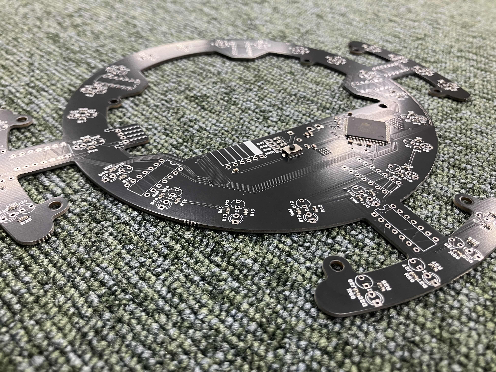
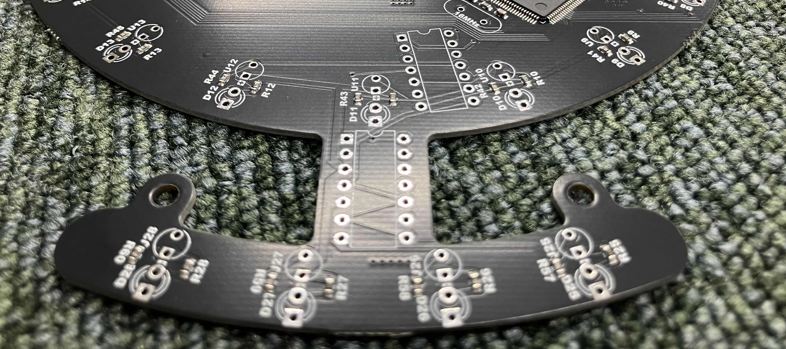

TOINIOT² Blog
ラインセンサ!!
2024-09-19 Writer: 010
今回はJLCPCB様にラインセンサ基板を頼ませていただきました。それがこちら!

いつも通り黒がきれいですね。しかし、いつもと形が…なんか出っ張り…?まぁ追々説明します。
まずは度々お世話になっているJLCPCB様について少しお話させてください。
JLCPCBは主に基板製作を手掛けている会社です。しかし、それだけではなく、3DプリントやCNC加工なども行っており、彼らに作れないものはない！と言っても過言ではありません。
そして、JLCPCB最大の特徴は「安い」「早い」「正確」の3拍子がそろっていること。商品自体は１＄から発注可能、工場は海外にあるのに、空輸とはいえ発注から2週間かからずでの到着はかなり魅力的です。
しかもこの2週間とはあくまでも通常配達での話。速達サービスを使えば数日で届きます。1週間もかかりません。ここでもう一度言っておきます。出荷元は海外です！日本ではありません‼凄すぎ…
もちろん、確立された機械生産によって不良品に当たる可能性はほとんどなく、少なくても僕たちは一度も遭遇していません(僕たちの設計ミスはたくさんありましたが(笑))。
あとそうそう、オペレーターの方がメールで注文内容について応対してくれるのも推しポイント!!以前僕たちが頼ませていただいた基板の中に構造上貧弱になっている箇所があったのですが、このままでは危ないこと、解決策などを提案していただき事なきを得ました。
しかも全部無料で…!(*'▽')
今ならクーポンもゲットできるみたいです。
この機会をお見逃しなく！！

↓JLCPCB様のHP
https://jlcpcb.jp/
↓クーポンゲットのチャンス！
・新規ユーザー$60クーポン
https://jlcpcb.com/JPV
・その他のクーポン
https://jlcpcb.jp/coupon-center?from=6layer
さて、本題に参りましょう。基軸となる円には周回するようにラインセンサが取り付けられます。いわゆるエンジェルリングというやつです。
これだと4方向にT字、I字のセンサをつけるときと違い、反応したセンサ一つひとつに合わせた動きをプログラムするのが格段に容易になるんです。
ですが4方向に配置するときと異なり、センサが一度反応しそこねると、構造上次に別の箇所が反応するまでに時間を要してしまいます。
今までならそれでもそれほどの問題はなかったのですが、数年前のルール改定でコートの白線の位置が変更になったことで、
ロボットのおよそ半分が外に出ると(完全にでていなくても)その時点でアウトオブバウンズ扱いになるようになりました。そうなると話は別です。
なにか2重にセンサを感知させられる機構が必要…!

そこで生まれたのがあの出っ張り。4方向(前だけスペース的にないのですが、ゴール前のペナルティーエリアはかなり余裕があってロボット1台丸々入れるんで大丈夫かなーという次第)を重点的にサブのセンサとして機能するよう配置しています。
まあ詳しいことは僕の10倍わかりやすくSigmaがまとめてくれているのでよければそちらをご覧ください(人任せ)。
しかしちょっと待ってください。こんな複雑な形どうやって基盤に…?エッチングで自作するとなると、基板の回路が出来上がればそれを電動カッターで切り出します。
当然基板自体も硬いのでそれ相応の力が必要。ましてやあんな形に切り出すのは到底不可能です。そもそも回路が設計通りになっているかもわからないし…いろいろとリスクが大きすぎます。
そこで登場するのがJLCPCB様です。前述の通りこの会社は様々な形、種類の基板を正確に、早く、低価格で提供することを得意としています。
この基板自作するのむずいな…と感じたらぜひ頼んでみてください(僕としては普通の基板でも頼んでみることをおすすめします。自作だとどこで失敗してるか分からないので)。
今回は以上となります。最後まで読んでいただきありがとうございました!!